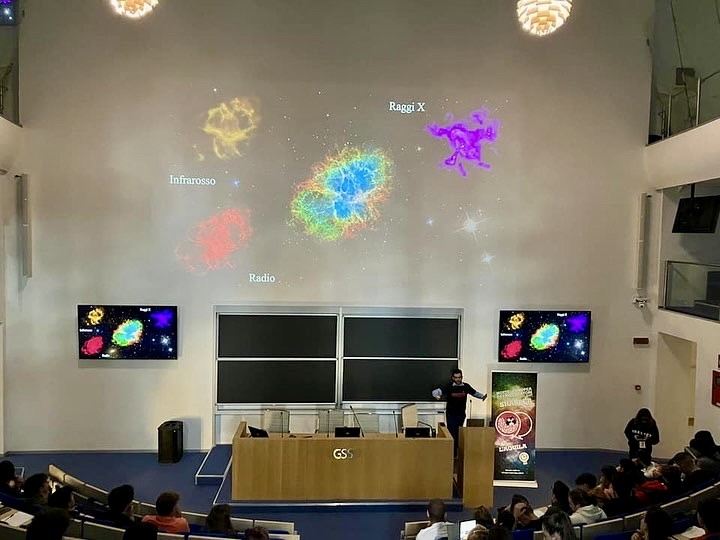
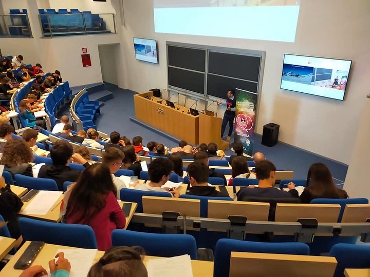

Sharper Night of Researchers
Talk for high school classes, introducing students to gravitational waves and multi-messenger astronomy.


Committed to sharing the excitement of astrophysics research with students, educators, and the public. From high school presentations to community events, making cutting-edge science accessible and inspiring.
Talk for high school classes, introducing students to gravitational waves and multi-messenger astronomy.
Engaged in explaining how we explore the energetic universe with Swift and through multi-messenger astronomy.
Here the video winner of the Springer Nature contest "Science in Shorts," reserved for researchers who published with the Nature group. Prize: 5000 €.